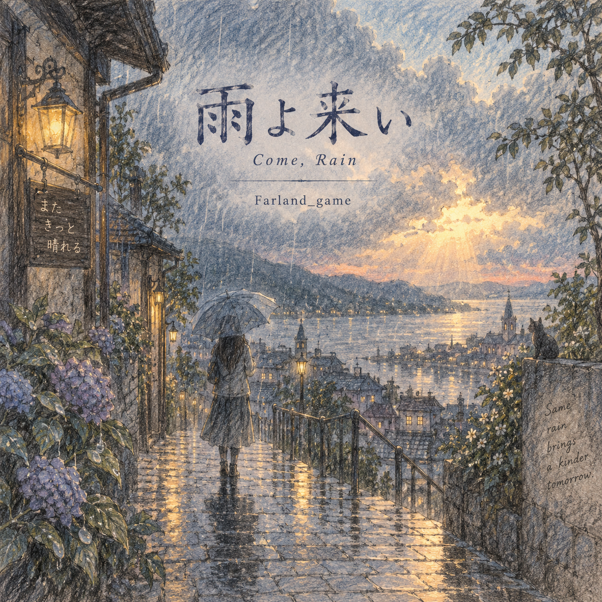
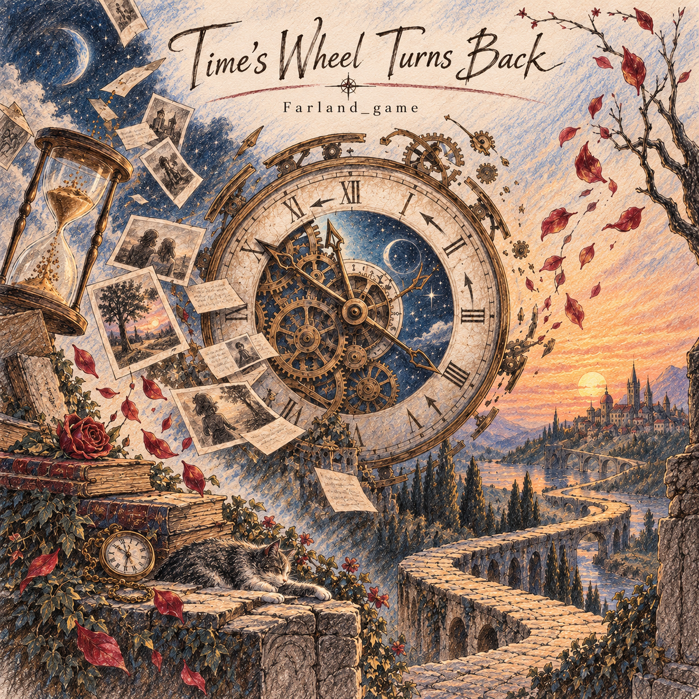

BARDIYA ALIZADEH · CREATIVE PORTFOLIO
Music & Cover Art
Two AI-assisted music projects in Japanese and Persian, created and directed by Bardiya Alizadeh (Kabir), known as Farland_game.

Two AI-assisted music projects in Japanese and Persian, created and directed by Bardiya Alizadeh (Kabir), known as Farland_game.

